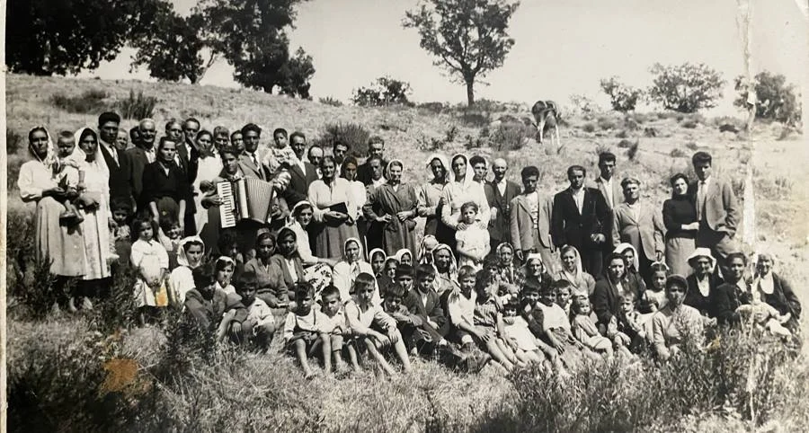
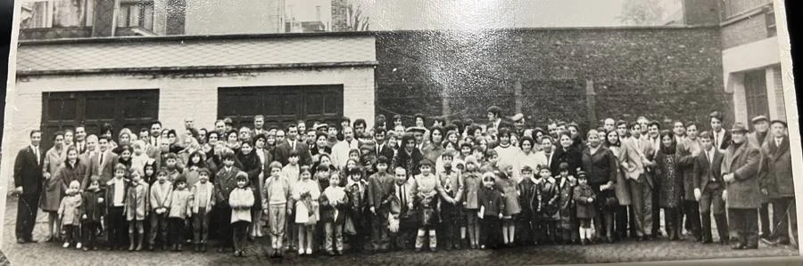
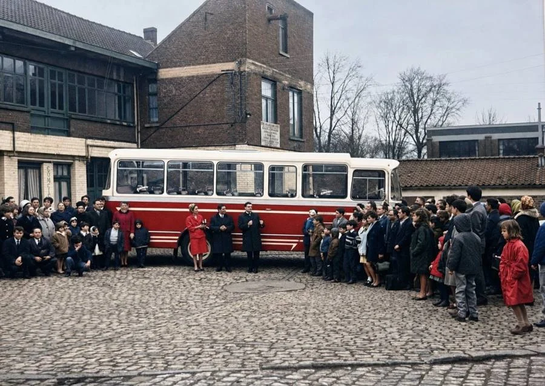
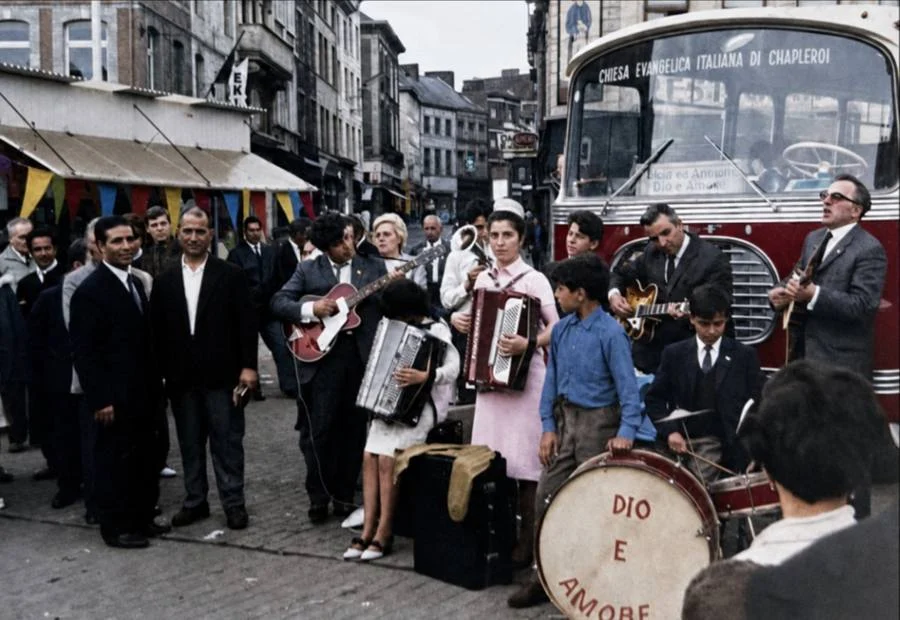
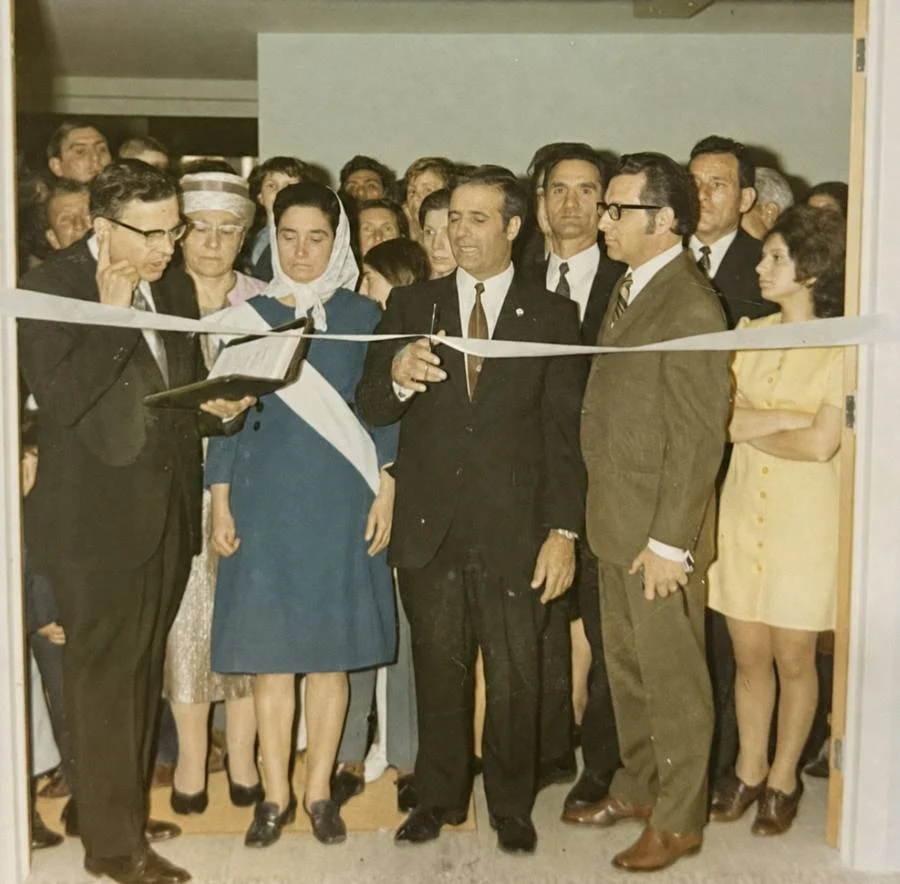
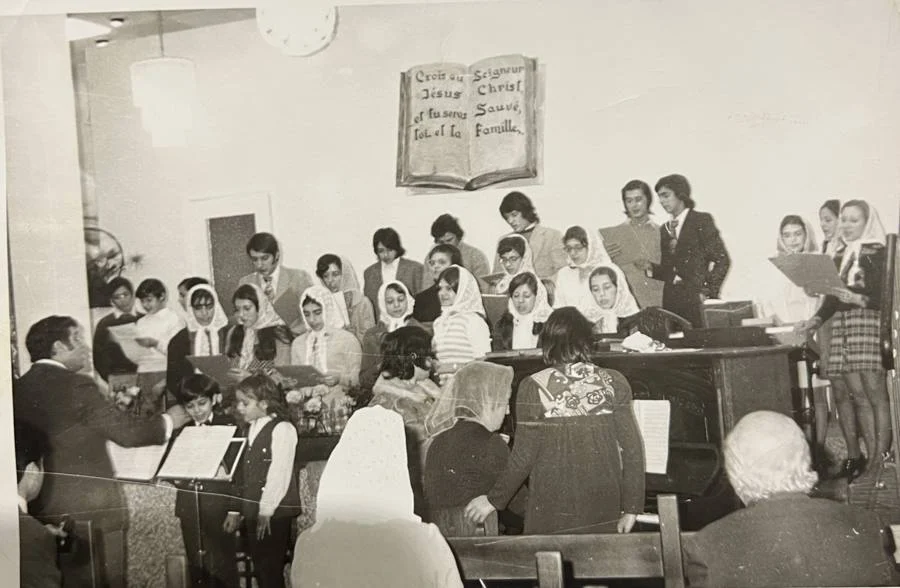

His grandfather carried a gun. His father built a church that seated seven hundred.
His mother walked out of a convent with a hidden Bible, and a name pressed between its
pages that would wait sixteen years to be given.
Moses Campisi grew up inside all of it. He still had to come to the end of the God he thought he knew.

Calabria. My grandfather Domenico’s home church.
My mother nearly did not live to be my mother.
Chapter One

Belgium. A borrowed building, and the Italian meetings begin.
A kilometre of dark, a roof of rock, and the weight of the whole world pressing down on it. That is what the family came to. It is not what they stayed in.

20 February 1966. The church bus is dedicated.
A believer came to my father with something on his heart. He felt God had asked him to buy the Italian church a bus.

The town square, on market day.
They would park the bus among the stalls and draw the power straight from the battery, and the music and the crowd would draw people in off the market to hear the gospel.

The opening of the new church.
My mother and father stood together and cut the ribbon, and I looked up at my mother’s face and saw it streaming with tears, and I did not understand why a person would cry at the happiest moment imaginable.

The choir, singing “A Pentecoste”.
The band kept playing, the choir kept singing, the children kept bouncing. Those were the hours of my childhood I wished would never end.
The last day I had my daughter began like any other.
Part Three · That Friday
The man who wrote it
Moses Campisi
Born in Belgium in 1963, the son of an Italian pastor, and a Gold Coast man for most of his life since. He is a husband to Dina, a father, and a grandfather five times over.
He began this book many years ago and kept adding to it, never quite able to call it finished. It took his son telling him it was time to lay down the pen.
“I did not want any of it to be lost.”
TheGodI Thought I KnewA journey from religion to real relationship
Moses Campisi
The book
The God I Thought I Knew
Some men inherit land.
Moses Campisi inherited a faith, carried across four generations and four countries, from a hillside church in Calabria, through the coal mines of Belgium, to the Gold Coast of Australia and the mountains of Sicily.
It is the story of the God who kept showing up. It is also the story of a harder discovery: that a man can grow up inside the church, know all the words, carry the name, and still have to come to the end of the God he thought he knew, before he could meet the God who was really there.
29 chapters, three parts
Family photographs from Calabria, Belgium and Australia
Read on any phone, tablet or computer
Secure checkout. Yours to keep.
He wrote this story, not with ink, but with real people and real events across four generations.
I only took a pen and wrote down on paper what He has done.
Read it while the people in it are still here to ask about it.
The God I Thought I Knew
Secure checkout is being connected
Payment for the book is being set up now. Leave your email and you will get the link the moment it opens.